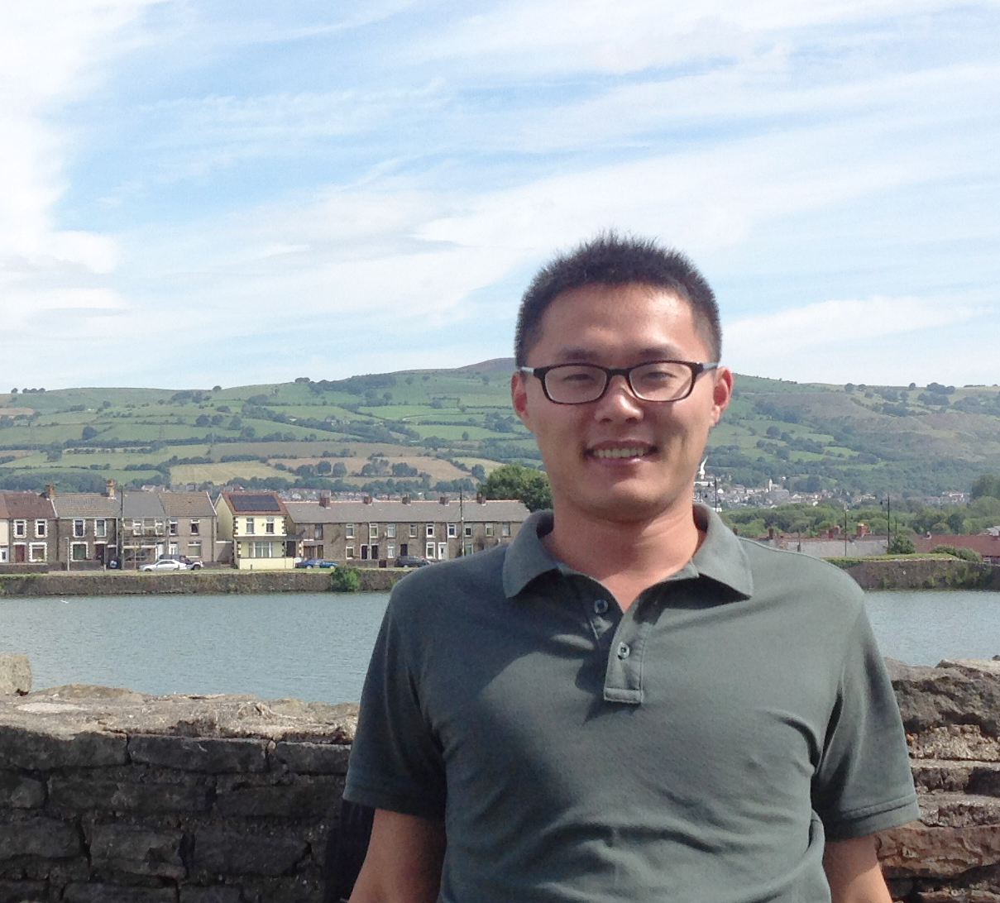

Jianwei Guo (郭建伟)
Brief Bio

I am currently a Ph.D. candidate in National Laboratory of Pattern Recognition(NLPR), Institute of Automation, Chinese Academy of Sciences (CASIA), advised by Prof. Xiaopeng Zhang and Assoc. Prof. Dong-Ming Yan.
I received my bachelor degree from Shandong University in 2011. From Apr. 2014 to Feb. 2015, I was a Visiting Scholar PhD Student at Visual Computing Research Center, SIAT, working with Prof. Oliver Deussen and Assoc. Prof. Zhanglin Cheng.
Welcome to take a look at my CV.
Research Interests
Computer graphics, including geometric processing, 3D shape analysis, and point-cloud-based plant modeling.